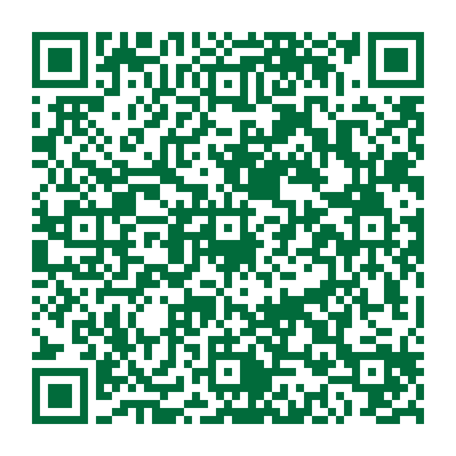
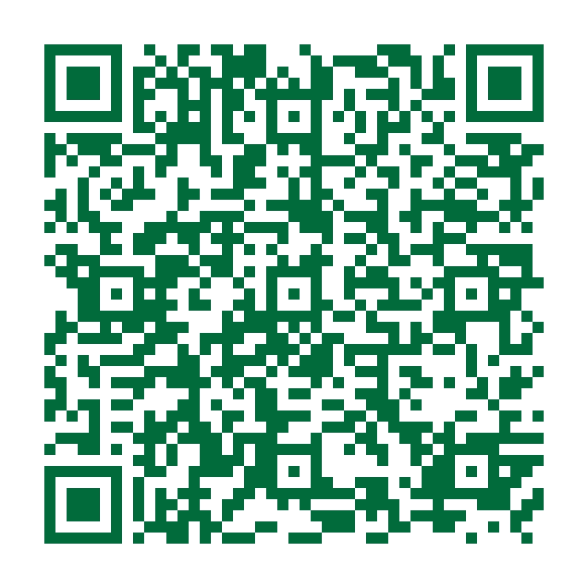

S
Speed Financeira
e Lan HouseCentro de Varginha
Gráfica rápida
Impressão, xerox, foto 3x4, plastificação e encadernação.

Aponte a câmerae peça seu orçamento
Rua Santa Cruz, 696 — Centro
Varginha/MG · (35) 3067-5017
Atendimento presencial
GRAF
S
Speed Financeira
e Lan HouseCorrespondente bancário
Consignado
INSS e CLT, FGTS e financiamento de veículo. Simule com a gente.
Aponte a câmerae fale com um atendente
Rua Santa Cruz, 696 — Centro
Varginha/MG · (35) 3067-5017
Aprovação e condições são da instituição financeira.
CONS
S
Speed Financeira
e Lan HouseAuxílio presencial
Serviços digitais
Meu INSS, Gov.br, CNIS, CRLV, MEI e currículo com orientação.

Aponte a câmerae veja o que levar
Empresa privada. Não somos INSS, Gov.br ou Detran.
O acesso é feito pelo titular, com a nossa orientação.
DIG
S
Speed Financeira
e Lan HouseFale com a loja
Atendimento
Tire uma dúvida, confirme o horário ou peça uma orientação.
Aponte a câmerae abra a conversa
Rua Santa Cruz, 696 — Centro
Varginha/MG · (35) 3067-5017
Confirme o horário antes de vir.
GERAL